Mapa y escena
Waypoints de NPC
La red por la que caminan los NPC: a destinos lejanos en las cinemáticas, y cuando persiguen o huyen. Colócala a mano o deja que la construya el programa, y luego compruébala.

| N.º | Nombre | Qué hace |
|---|---|---|
| 1 | Mostrar red | Muestra la red en el mapa. |
| 2 | Colocar waypoints / Conectar | Coloca puntos pulsando en el suelo / conecta dos puntos. |
| 3 | Crear red / Quitar los creados | Reparte una red por el suelo transitable / quita lo creado. |
| 4 | Comprobar red | Encuentra lo que el juego rechazaría; pulsa un problema para volar hasta allí. |
Ábrela con Waypoints de NPC en la barra del mapa. Mostrar red dibuja los caminos: en verde los puestos a mano (target), en azul los automáticos (nav goals y puntos de combate), en naranja los saltos (targetJump).
- Colocar waypoints: pulsa en el suelo; cada punto nuevo se conecta con el anterior. Mayús+clic empieza un camino nuevo, Esc termina.
- Conectar: pulsa dos puntos para conectarlos (Ctrl: un salto); pulsar dos puntos conectados los desconecta. Un punto tiene como máximo cuatro conexiones.
- Crear red reparte waypoints por el suelo transitable (separación: los niveles originales usan unos 230) y los conecta, en un paso de deshacer. Quitar los creados quita solo esos; los colocados a mano se quedan.
- Comprobar red encuentra lo que el juego rechazaría o los NPC no pueden usar; pulsa un problema para volar hasta allí.
Borrar, conectar automáticamente, duplicar#
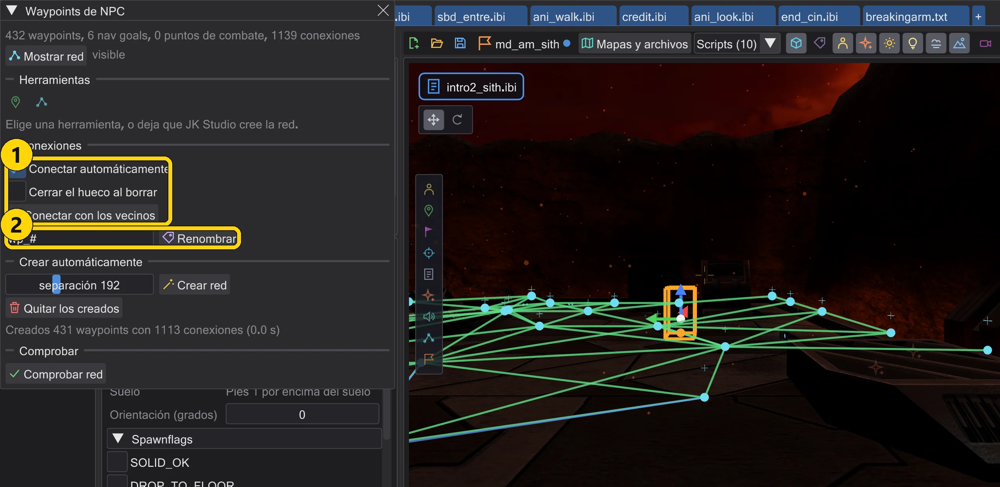
| N.º | Nombre | Qué hace |
|---|---|---|
| 1 | Conectar automáticamente / Cerrar el hueco al borrar / Conectar con los vecinos | Conectar como el juego: automáticamente, al borrar o para la selección. |
| 2 | Renombrar | Renombrar los puntos de ruta seleccionados con un patrón. |
- Borrar (Delete, el botón del inspector o Eliminar en el menú del botón derecho) quita también cada
targetatargetJumpque nombraba el punto de ruta borrado, en el mismo paso de deshacer. Si nombran otras entidades, el programa pregunta antes. Con Cerrar el hueco al borrar los vecinos de un punto borrado se conectan entre sí donde la prueba de aristas del juego lo permite. - Conectar automáticamente (activado por defecto): un punto de ruta que colocas, mueves o duplicas se conecta con los puntos dentro de separación que el juego también conecta, con la propia prueba de aristas del juego (NAV::TestEdge, en Jedi Outcast HardConnect), los más cercanos primero, como máximo cuatro campos
targetpor punto. Tras moverlo se quitan las conexiones que el juego descartaría; todo en un paso de deshacer. Conectar con los vecinos hace lo mismo para la selección. Los navgoals y los puntos de combate quedan fuera: el juego los conecta solo. - Duplicar (Ctrl+D o el menú del botón derecho) sobre varios puntos de ruta: las copias reciben nombres libres y siguen conectadas entre sí, las conexiones hacia fuera quedan como estaban; después se conectan con sus nuevos vecinos. El campo junto a Renombrar renombra los puntos seleccionados con un patrón (
#se convierte en un número); cadatargetque los nombraba se actualiza. - Crear red también empieza en los puntos de ruta que ya están en el mapa: coloca uno en una sala que la generación omitió y genera de nuevo; la sala recibe su red, conectada con tu punto.
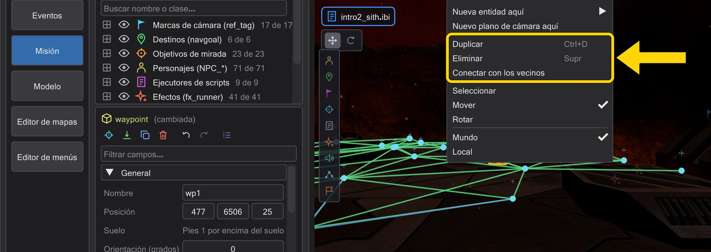
Generación: salas, escaleras, puertas#
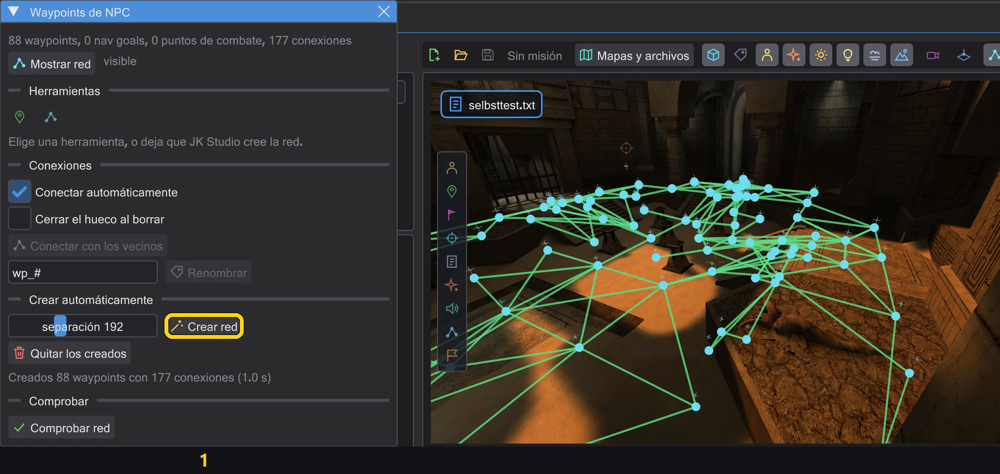
| N.º | Nombre | Qué hace |
|---|---|---|
| 1 | Crear red | Repartir puntos de ruta por todo el suelo al que llega un PNJ. |
- Crear red camina como un PNJ del juego desde el inicio del jugador, los personajes, los objetivos de navegación y los puntos de ruta del mapa: 15 unidades por paso (lo que corre un PNJ en un fotograma), escalones de hasta 18 arriba y abajo (
STEPSIZE), por suelo no más inclinado de lo que permite el juego (MIN_WALK_NORMAL), contra la colisión del juego: los brushes clip bloquean, la decoración sin colisión no. Así llega a cada sala en la que puede entrar una figura, también por puertas estrechas. - Los puntos van en la cuadrícula de separación, arriba y abajo de cada escalera y rampa que sube más de un escalón y allí donde la cuadrícula dejaría un hueco de más de un espaciado: en puertas y salas pequeñas. Las rampas también tienen puntos en la pendiente.
- Una conexión solo se mantiene si una figura puede recorrer la línea recta y la propia prueba de aristas del juego (NAV::TestEdge, en Jedi Outcast HardConnect) la conserva en ambas direcciones. Las puertas cuentan como abiertas, igual que la construcción de la red del juego abre una puerta que estorba; si los PNJ pueden pasar se decide al jugar, como en el juego.
- El juego admite como máximo 1023 puntos de ruta. Si la cuadrícula necesita más, el espaciado crece (hasta el triple de separación) y el mensaje lo indica. Los tejados y salientes a los que solo se llega saltando no reciben puntos caminando; haz clic allí con Punto de inicio (abajo).
Áreas, ruta, punto de inicio, aristas de salto#
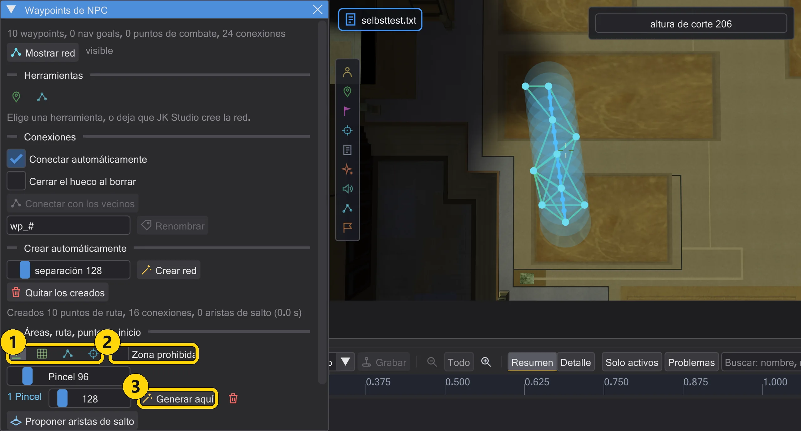
| N.º | Nombre | Qué hace |
|---|---|---|
| 1 | Pincel Lazo Ruta Punto de inicio | Pintar un área (pincel, lazo), trazar una ruta, hacer clic en un punto de inicio. |
| 2 | Zona prohibida | La próxima área pintada es una zona prohibida. |
| 3 | Generar aquí | Generar solo en esta área, con su propio espaciado. |
- Pincel y Lazo pintan en el suelo con el botón izquierdo pulsado, en la vista 3D o en la cenital. Generar aquí camina como un PNJ solo dentro del área y coloca puntos de ruta con el espaciado del área donde aún no hay; se conectan con los puntos de alrededor mediante la prueba de aristas del juego, igual que al colocarlos a mano. Un paso de deshacer. Las áreas se guardan para el mapa (en la carpeta de ajustes, no en el .bsp) y vuelven al abrirlo de nuevo.
- Con Zona prohibida marcada, la siguiente área es una zona prohibida (roja): la generación, una ruta y un punto de inicio nunca colocan allí un punto de ruta. Los puntos de alrededor siguen conectándose a través de ella donde pasa la prueba de aristas del juego.
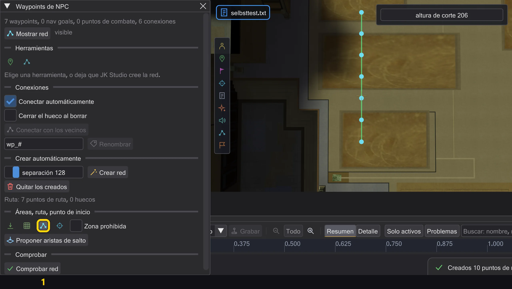
- Ruta: traza una línea sobre el suelo. A lo largo de ella aparecen puntos de ruta cada separación, apoyados en el suelo como en la generación, y los vecinos se conectan donde la prueba de aristas del juego conserva la arista en ambas direcciones. Donde no, o donde el juego no conservaría un punto, una cruz roja marca el lugar y el mensaje indica el primero. La ruta se conecta con los puntos de alrededor. Un paso de deshacer.
- Punto de inicio: haz clic en un suelo al que no llegó la generación: un tejado, una cornisa, una sala tras un desnivel. Desde allí sigue caminando como un PNJ, coloca puntos de ruta donde la red aún no cubre el suelo y los conecta: a pie si una figura puede ir allí, si no con aristas de salto (abajo). Un paso de deshacer.
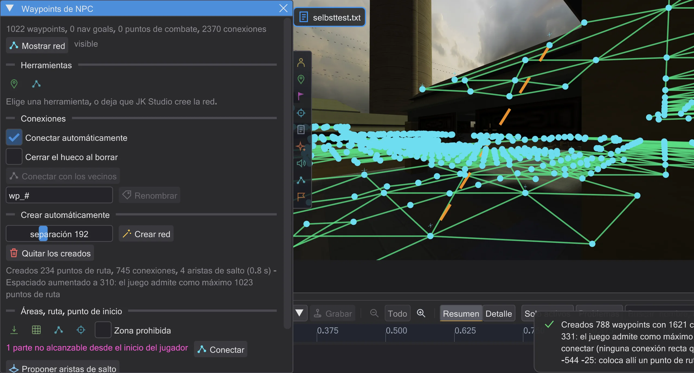
- Las aristas de salto son
targetJump. El juego solo salta en una arista así, no la comprueba al cargar el mapa y solo deja usarla a los PNJ que pueden saltar (salto de la Fuerza o una clase que salta por sí misma). Proponer aristas de salto (también tras un punto de inicio y Conectar) escribe una solo entre partes de la red que no están conectadas de otro modo, y solo donde un PNJ hace de verdad el salto en el juego, en ambas direcciones, con la misma prueba que hace el juego antes de saltar (NPC_TryJump, NPC_Jump): como máximo 750 de distancia, como máximo 450 hacia abajo, suelo bajo el destino y un arco por el que pasa la caja del PNJ. Cada punto de ruta tiene un campotargetJump. Jedi Outcast no tiene aristas de salto. - Los puntos de ruta a los que no llega el inicio del jugador por la red se dibujan en violeta, y la ventana cuenta las partes. Conectar camina desde cada una de esas partes hacia la red (como con un punto de inicio allí, dentro de dos espaciados alrededor) y la conecta, a pie o si no con aristas de salto.
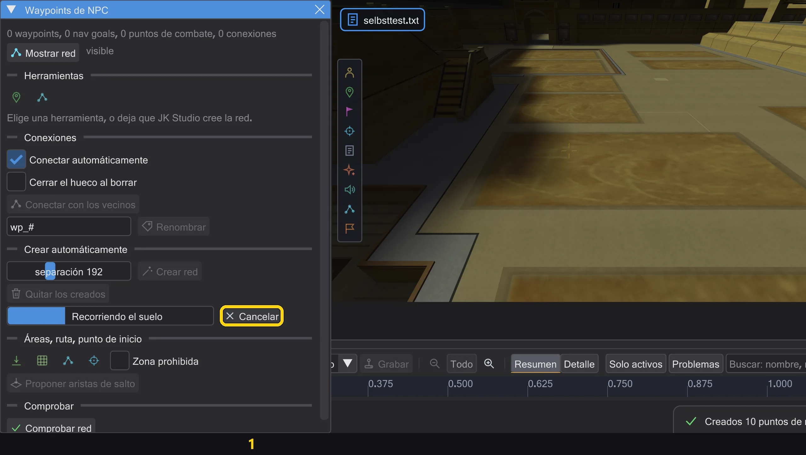
- En mapas grandes la generación tarda unos segundos. Se ejecuta en segundo plano: la ventana muestra el progreso y el paso, y puedes seguir mirando o trabajar en otras ventanas. El resultado llega al final en un paso de deshacer: la misma red que calculada directamente. Si las entidades cambian mientras tanto, se descarta con un mensaje; Cancelar la detiene y no cambia nada.
Puntos de combate, ruta de prueba, cobertura#
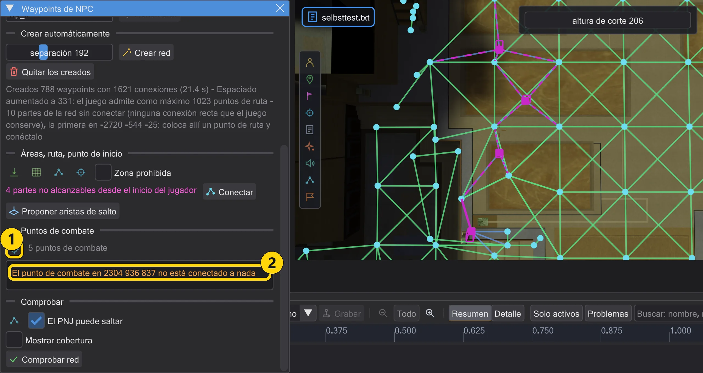
| N.º | Nombre | Qué hace |
|---|---|---|
| 1 | Colocar punto de combate | Haz clic en el suelo para colocar un punto de combate (point_combat). |
| 2 | Puntos de combate | Avisos exactamente como los mensajes del juego; un clic vuela hasta allí. |
- Los tiradores van a los puntos de combate para cubrirse o tener mejor ángulo. Colocar punto de combate coloca uno por clic en el suelo, 25 por encima como un punto de ruta; varios clics colocan varios. Supr, deshacer y Ctrl+D funcionan como con cualquier entidad.
- Un punto de combate no necesita target. Al cargar el mapa, el juego lo convierte en un punto de la red y lo conecta con hasta cuatro puntos de ruta cercanos en el mismo suelo (líneas punteadas). Después asigna a cada punto de combate el punto de la red más cercano que ve, normalmente el propio punto de combate. Solo si el juego no puede convertirlo en punto (una caja a su alrededor toca una pared), la línea continua lleva al punto de ruta que recibe en su lugar.
- Rojo: el juego informa "Combat Point at ... has no waypoint": no encuentra ningún punto de la red para él (por ejemplo en un mapa sin conexiones o junto a una pared muy por encima de todos los puntos de ruta). Naranja: "not connected to anything": es un punto, pero ningún punto de ruta está lo bastante cerca en el mismo suelo.
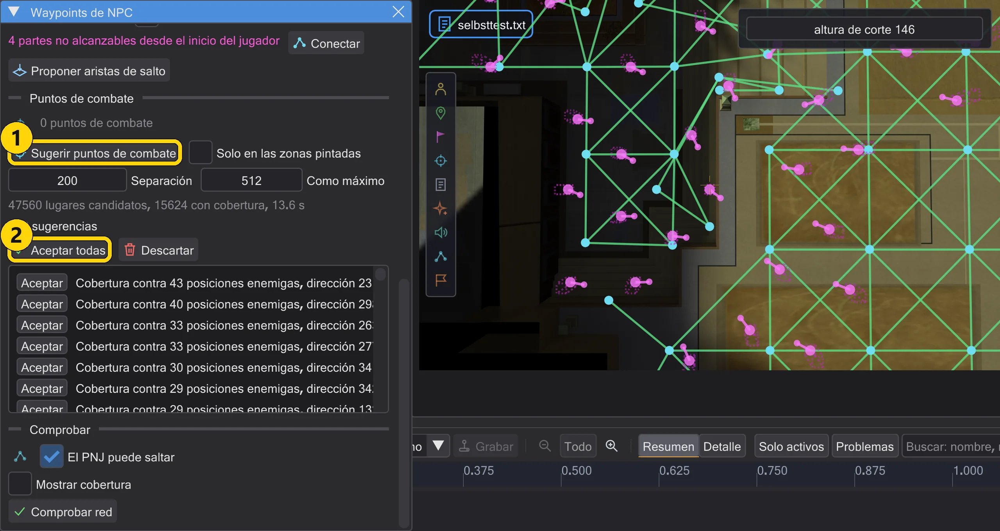
- Sugerir puntos de combate busca puntos de combate como un tirador elige uno en el juego. Un soldado de asalto que te pierde de vista, o al que te acercas demasiado, pide un punto de combate con cobertura y tiro libre: desde el propio punto no debe verte (ni el cuerpo ni la cabeza), pero desde la boca de su bláster, de pie, sí; se agacha tras la cobertura y dispara por encima. Los candidatos son el suelo transitable cerca de los puntos de ruta; las posiciones enemigas, el suelo transitable dentro del alcance visual (1024), no a menos de 200. Primero van los puntos con cobertura contra más posiciones enemigas. No cambia nada hasta que aceptas: Aceptar para uno, Aceptar todas para todos en un solo paso de deshacer. Como uno colocado a mano, el juego los conecta él mismo con los puntos de ruta; se descarta una sugerencia que el juego no conectaría ("has no waypoint").
- Separación y Como máximo ajustan la densidad. Los valores predeterminados salen de los mapas originales del conjunto de reglas: la distancia habitual al siguiente punto de combate (Jedi Academy 231, Movie Duels 200, Jedi Outcast 145) y tantos puntos de combate por punto de ruta como allí (Jedi Academy 0,52, Movie Duels 1,0, Jedi Outcast 0,45). Con Solo en las zonas pintadas solo el suelo dentro de una zona pintada recibe sugerencias. La búsqueda se hace en segundo plano con una barra de progreso; Cancelar la detiene sin cambiar nada. En Jedi Outcast el tirador comprueba desde el propio punto: cuerpo oculto, cabeza visible.
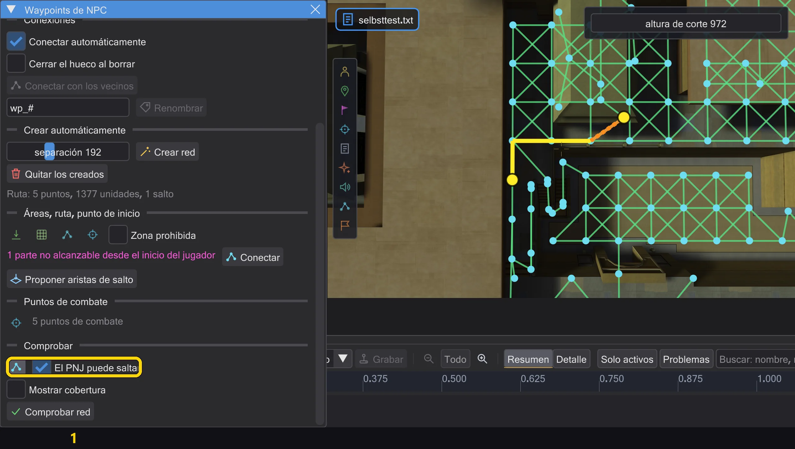
- Ruta de prueba: haz clic en dos puntos del suelo. El editor muestra la ruta que tomaría un PNJ en el juego: desde el punto de la red que el juego elige para el inicio hasta el del destino, por la red tal como la construye el juego. Con El PNJ puede saltar el PNJ puede usar aristas de salto (como con salto de la Fuerza). Si no hay ruta, la ventana dice por qué. Así una conexión que falta se ve enseguida, antes de buscarla en el juego.
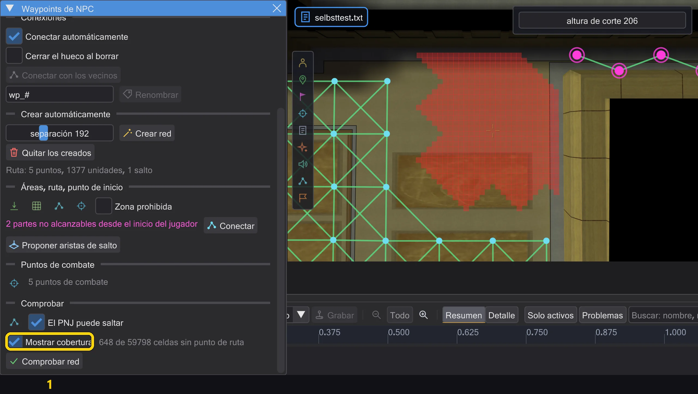
- Mostrar cobertura pasa a la vista cenital y colorea de rojo cada trozo de suelo (32 x 32) desde el que no se alcanza a pie ningún punto de ruta en separación, caminando como en la generación, desde el inicio del jugador, los personajes y los puntos de ruta. Son los lugares que una generación o una ruta se saltaron. Se calcula en segundo plano y de nuevo tras cada cambio.
- Mover a un lugar válido (activado por defecto): un punto de ruta que colocas a mano donde el juego lo descartaría (dentro de lo sólido, demasiado cerca de una pared o flotando) va al lugar más cercano del mismo suelo donde el juego lo conserva, con las mismas reglas que la generación. La barra de estado dice cuánto y adónde. Sin esta opción, el punto se queda donde hiciste clic y la barra de estado avisa.
La vista previa de las cinemáticas usa esta red para las marchas exactamente como el juego: los destinos lejanos necesitan aquí un camino; si no, la figura se queda quieta (Cómo se mueven las figuras, como en el juego). Una red necesita al menos cuatro waypoints. Las puertas de la red cuentan mientras están abiertas; una puerta cerrada solo cuenta si se abre sola para los NPC.